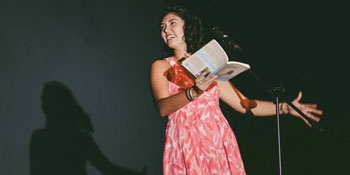

past performance |
|||
|
Sarah Kay's No Matter the Wreckage: Live AudioBook Show! showtimes:November 11 @ 7 & 9:30pm Sarah’s full bio is available online at: www.kaysarahsera.com |
 | ||
|
Sarah Kay's bestselling poetry book "No Matter The Wreckage" is going to be an audiobook, released by Hachette Books in 2016. Tonight, Sarah will be performing poems from the book that are especially made for live performance, and the audio will be used for the upcoming audiobook! Because tonight's show(s) will be audio recorded, come ready to laugh hard, cheer loud, hoot & holler. Please do not bring backpacks or large bags for security reasons, and because the space is tight and cozy. In honor of Veterans Day, a special ticket price is offered for veterans of the Armed Services. The Early Show is at 7pm (Doors open at 6:30) and the Late Show is at9:30pm (Doors open at 9). FAQs Are there ID requirements or an age limit to enter the event? What can/can't I bring to the event? Will Sarah's books be available for sale? Can I meet Sarah and ask her to sign my book? |
|||
upcoming performances |
|||
 |
|||
| EVQ Film Festival 2018 August 20-25 |
|||
performance archives |
|||
| 2018 | 2017 | 2016 | 2015 |
| 2014 | 2013 | 2012 | 2011 |
| 2010 | 2009 | 2008 | 2007 |